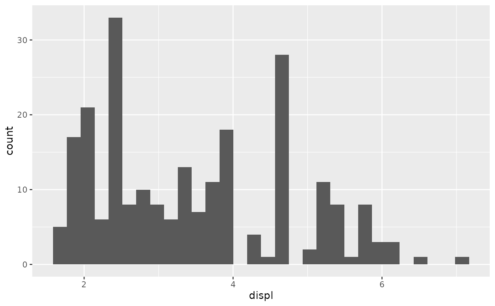
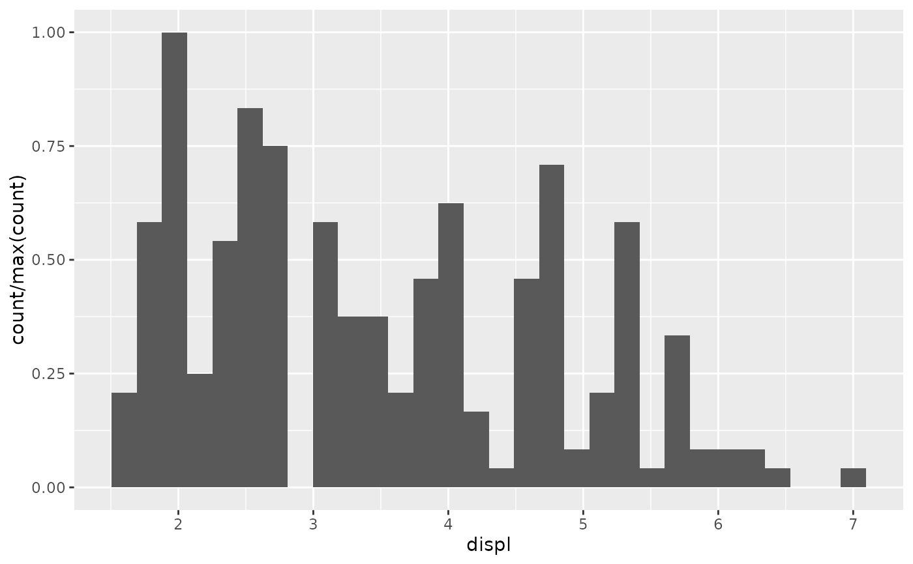
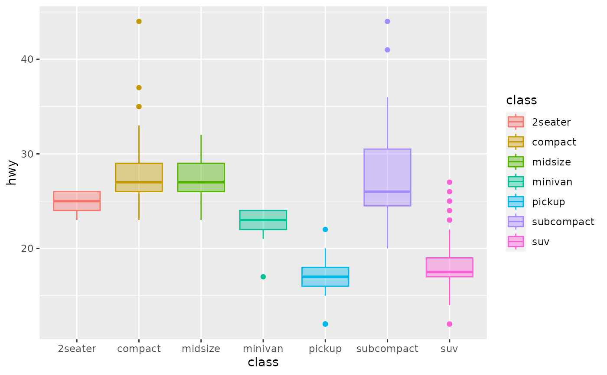
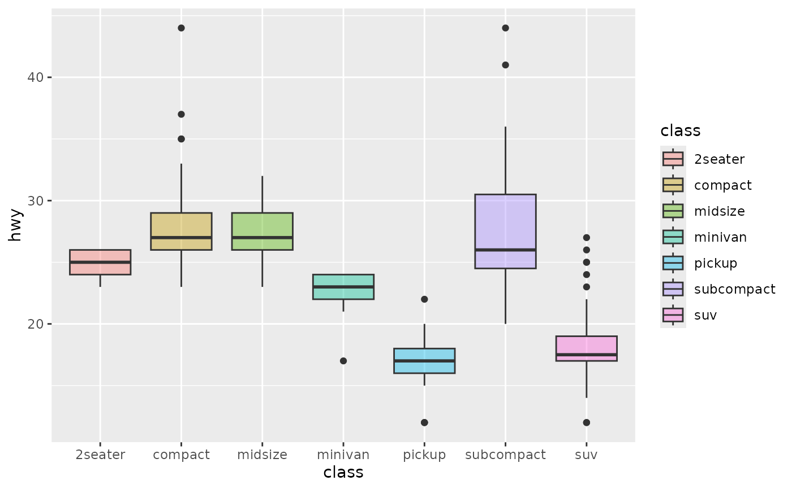
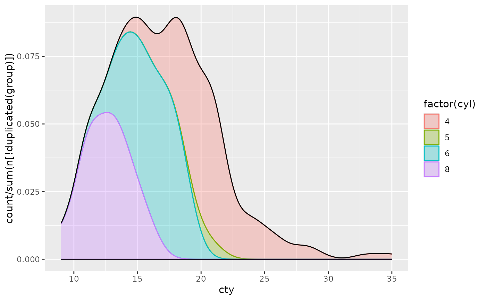
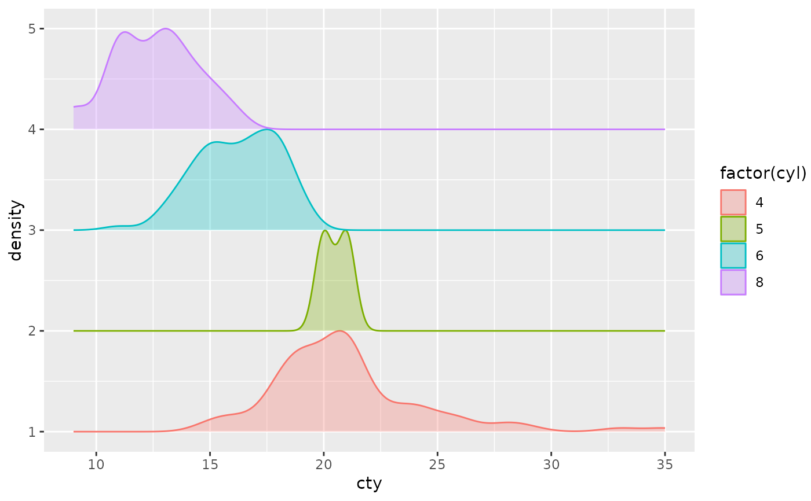
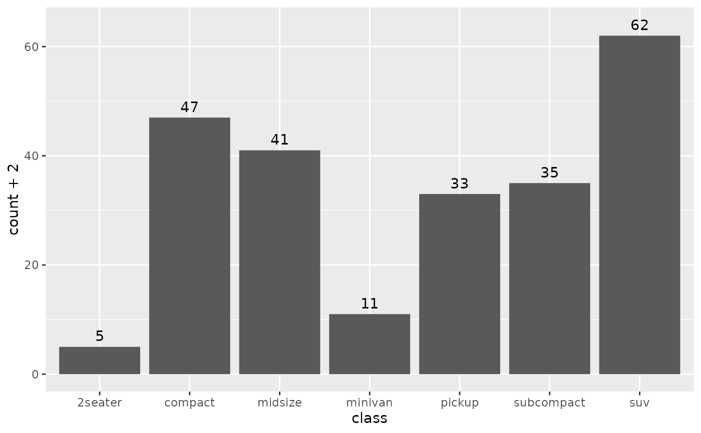
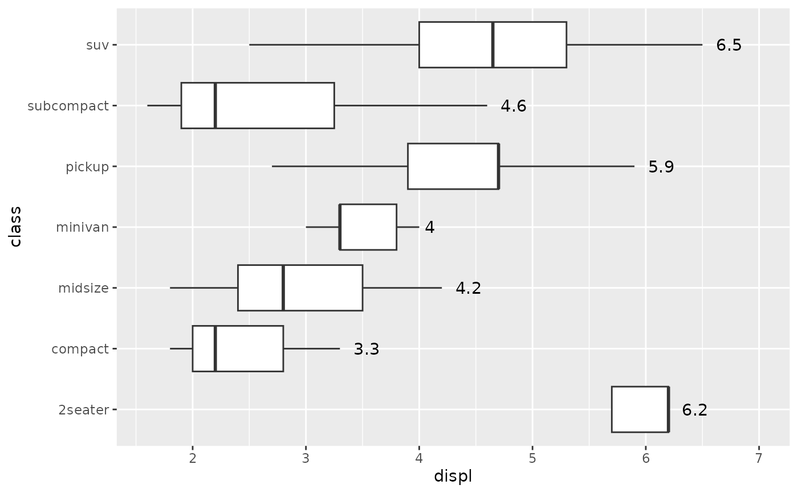

Most aesthetics are mapped from variables found in the data. Sometimes, however, you want to delay the mapping until later in the rendering process. ggplot2 has three stages of the data that you can map aesthetics from, and three functions to control at which stage aesthetics should be evaluated.
after_stat() replaces the old approaches of using either stat(), e.g.
stat(density), or surrounding the variable names with .., e.g.
..density...
Usage
# These functions can be used inside the `aes()` function
# used as the `mapping` argument in layers, for example:
# geom_density(mapping = aes(y = after_stat(scaled)))
after_stat(x)
after_scale(x)
from_theme(x)
stage(start = NULL, after_stat = NULL, after_scale = NULL)Arguments
- x
<
data-masking> An aesthetic expression using variables calculated by the stat (after_stat()) or layer aesthetics (after_scale()).- start
<
data-masking> An aesthetic expression using variables from the layer data.- after_stat
<
data-masking> An aesthetic expression using variables calculated by the stat.- after_scale
<
data-masking> An aesthetic expression using layer aesthetics.
Staging
Below follows an overview of the three stages of evaluation and how aesthetic evaluation can be controlled.
Stage 1: direct input at the start
The default is to map at the beginning, using the layer data provided by the user. If you want to map directly from the layer data you should not do anything special. This is the only stage where the original layer data can be accessed.
# 'x' and 'y' are mapped directly
ggplot(mtcars) + geom_point(aes(x = mpg, y = disp))Stage 2: after stat transformation
The second stage is after the data has been transformed by the layer
stat. The most common example of mapping from stat transformed data is the
height of bars in geom_histogram(): the height does not come from a
variable in the underlying data, but is instead mapped to the count
computed by stat_bin(). In order to map from stat transformed data you
should use the after_stat() function to flag that evaluation of the
aesthetic mapping should be postponed until after stat transformation.
Evaluation after stat transformation will have access to the variables
calculated by the stat, not the original mapped values. The 'computed
variables' section in each stat lists which variables are available to
access.
# The 'y' values for the histogram are computed by the stat
ggplot(faithful, aes(x = waiting)) +
geom_histogram()
# Choosing a different computed variable to display, matching up the
# histogram with the density plot
ggplot(faithful, aes(x = waiting)) +
geom_histogram(aes(y = after_stat(density))) +
geom_density()Stage 3: after scale transformation
The third and last stage is after the data has been transformed and
mapped by the plot scales. An example of mapping from scaled data could
be to use a desaturated version of the stroke colour for fill. You should
use after_scale() to flag evaluation of mapping for after data has been
scaled. Evaluation after scaling will only have access to the final
aesthetics of the layer (including non-mapped, default aesthetics).
# The exact colour is known after scale transformation
ggplot(mpg, aes(cty, colour = factor(cyl))) +
geom_density()
# We re-use colour properties for the fill without a separate fill scale
ggplot(mpg, aes(cty, colour = factor(cyl))) +
geom_density(aes(fill = after_scale(alpha(colour, 0.3))))Complex staging
Sometimes, you may want to map the same aesthetic multiple times, e.g. map
x to a data column at the start for the layer stat, but remap it later to
a variable from the stat transformation for the layer geom. The stage()
function allows you to control multiple mappings for the same aesthetic
across all three stages of evaluation.
# Use stage to modify the scaled fill
ggplot(mpg, aes(class, hwy)) +
geom_boxplot(aes(fill = stage(class, after_scale = alpha(fill, 0.4))))
# Using data for computing summary, but placing label elsewhere.
# Also, we're making our own computed variables to use for the label.
ggplot(mpg, aes(class, displ)) +
geom_violin() +
stat_summary(
aes(
y = stage(displ, after_stat = 8),
label = after_stat(paste(mean, "±", sd))
),
geom = "text",
fun.data = ~ round(data.frame(mean = mean(.x), sd = sd(.x)), 2)
)Conceptually, aes(x) is equivalent to aes(stage(start = x)), and
aes(after_stat(count)) is equivalent to aes(stage(after_stat = count)),
and so on. stage() is most useful when at least two of its arguments are
specified.
Theme access
The from_theme() function can be used to acces the element_geom()
fields of the theme(geom) argument. Using aes(colour = from_theme(ink))
and aes(colour = from_theme(accent)) allows swapping between foreground and
accent colours.
Examples
# Default histogram display
ggplot(mpg, aes(displ)) +
geom_histogram(aes(y = after_stat(count)))
#> `stat_bin()` using `bins = 30`. Pick better value with `binwidth`.

# Scale tallest bin to 1
ggplot(mpg, aes(displ)) +
geom_histogram(aes(y = after_stat(count / max(count))))
#> `stat_bin()` using `bins = 30`. Pick better value with `binwidth`.

# Use a transparent version of colour for fill
ggplot(mpg, aes(class, hwy)) +
geom_boxplot(aes(colour = class, fill = after_scale(alpha(colour, 0.4))))

# Use stage to modify the scaled fill
ggplot(mpg, aes(class, hwy)) +
geom_boxplot(aes(fill = stage(class, after_scale = alpha(fill, 0.4))))

# Making a proportional stacked density plot
ggplot(mpg, aes(cty)) +
geom_density(
aes(
colour = factor(cyl),
fill = after_scale(alpha(colour, 0.3)),
y = after_stat(count / sum(n[!duplicated(group)]))
),
position = "stack", bw = 1
) +
geom_density(bw = 1)

# Imitating a ridgeline plot
ggplot(mpg, aes(cty, colour = factor(cyl))) +
geom_ribbon(
stat = "density", outline.type = "upper",
aes(
fill = after_scale(alpha(colour, 0.3)),
ymin = after_stat(group),
ymax = after_stat(group + ndensity)
)
)

# Labelling a bar plot
ggplot(mpg, aes(class)) +
geom_bar() +
geom_text(
aes(
y = after_stat(count + 2),
label = after_stat(count)
),
stat = "count"
)

# Labelling the upper hinge of a boxplot,
# inspired by June Choe
ggplot(mpg, aes(displ, class)) +
geom_boxplot(outlier.shape = NA) +
geom_text(
aes(
label = after_stat(xmax),
x = stage(displ, after_stat = xmax)
),
stat = "boxplot", hjust = -0.5
)
